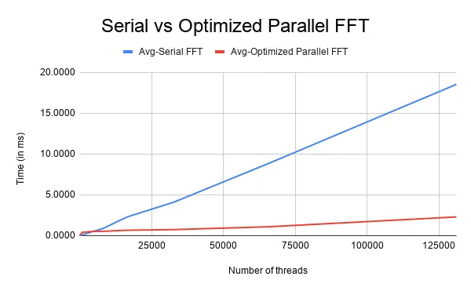

Team members
- Shashwatha Mitra G B
- Narayan G
- Niranjan S Y
- Varun N R
Introduction
The Fourier Transform is a mathematical transform that converts a function, often in time, to a function in the frequency space. It is a powerful tool and comes up in many applications like signal processing, image processing, quantum mechanics etc. Mathematically, the Fourier Transform is a continuous map $f:\mathbb{C}\rightarrow\mathbb{C}$ given by
For real world applications, a discrete version of the Fourier Transform, also referred to as DFT, is used. The integral is replaced with a summation over N sample points. In the limiting case as N becomes large, the DFT and FT become equal. The DFT of a N sample sequence $x = {x_0, x_1,\dots, x_{N-1}}$ is given by the sequence $X = {X_k}$ where The time complexity of calculation of the DFT is $\mathcal{O}(n^2)$ as it takes $\mathcal{O}(n)$ time to calculate the $k^{th}$ term. By using the symmetry of complex numbers, we can adopt a butterfly to reduce the time complexity to $\mathcal{O}(nlgn)$. This algorithm is called the Cooley-Tukey Algorithm.
Objectives
In this project we aim to parallelize the Cooley-Tuckey algorithm using NVIDIA CUDA and explore possible optimizations for both 1D and 2D inputs.
Methodology
The Cooley-Tukey algorithm for 1D input can be summed by the following
Input: Sequence a[n]
Output: DFT of a = A[n]
Bit reverse re-order the input sample, i.e place element 'i' of 'a' into bit-reverse of 'i' into 'A'
for (s=1 to lgN)
m = 2^s;
w_m = exp(-2 pi i/m);
for(j=0 to N by m)
w = 1;
for(k=0 to m/2-1)
t = w*A[k+j+m/2];
u = A[j+k];
A[j+k] = u+t
A[j+k+m/2] = u-t
w = w*w_m
From the algorithm we can see that the value of $w$ in the $k$ loop is $w = \mathrm{e}^{-\frac{2\pi i k}{m}}$. When the value of $m$ is large, the third loop runs more iterations than the $j$ loop. Similarly, for small $m$, the $j$ loop runs more iterations than the $k$ loop. Thus we can split the parallelization of the $j$ and $k$ loop based on the value of $m$. The algorithm can be summed up as follows:
Input: bit-reversed copy of input sequence
for (i=0 to lgN)
m = 2^i
if (balancing_factor)
Parallelize j loop
else
for (j=0 to N by m)
Parallelize k loop
The balancing factor is a function of N with a half and half split of $\left \lfloor{\sqrt{N}}\right \rfloor$. For 2D inputs, the 1D FFT is applied to both row and column of the input. Each row of the input sequence is parallelized and a transpose of the matrix is parallelized in a similar manner. The final resultant matrix is then retransposed to get final the resultant DFT of the 2D input.
Results
To compare the efficiency of the parallelization scheme, it is compared with it’s serial counterpart. The input of the 1D FFT is a sum of sinusoidal waves sampled at regular intervals. For example, the input sequence can be written as
where $f$ is the frequency of the sinusoid. As DFT is a mapping onto the complex plane, $DFT(f’) = a+ib$. The phase of the complex number represents the phase of that sinusoid of that frequency. For a simple sinusoid with constituent frequencies $f_1, f_2, f_3$ with all sinusoids in phase, we have Here, it can be clearly seen that, each non-zero DFT has a phase of $90^o$ re-inforcing the fact that the inputs were sinusoids. The parallelization procedure is verified by using these results. To compare the perfomance of the serial and parallel implementations, the FFT procedures are timed using time-stamping API (such as clock() in C). The results for the same can be seen below

The size of input sequence and the number of threads spawned in the parallel implementation are the same. As can be seen from the image the parallel 1D FFT outperforms the serial version by a large margin.
Applications
The Discrete Fourier Transform (DFT) is one of the most important tools in Digital Signal Processing. The DFT can calculate a signal’s frequency spectrum. This means that from the shape of the time domain of a waveform, the DFT can extract the frequency, phase and amplitude of the component sinusoids. Also, the DFT can find a system’s frequency response from the system’s impulse response, and vice versa. This allows systems to be analyzed in the frequency domain, just as convolution allows systems to be analyzed in the time domain.
In this project, we take a small audio signal and compute its DFT, which divides the signal into its frequency components. The result of the DFT computation will be a signal which has sharp peaks corresponding to the constituent frequencies of the original signal. We can then flatten out the peaks corresponding to all frequencies beyond a certain limit, and on computing the inverse DFT of the resulting signal, we get back the original audio signal with all the high frequency noises removed. In this way, DFT can be useful as a low pass filter, for removing background noises from an audio.
Further applications of DFT can be found here.